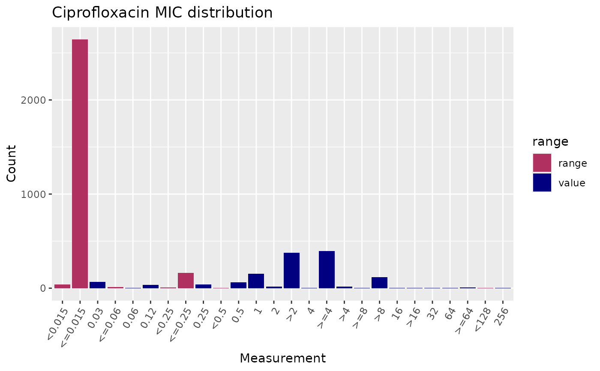
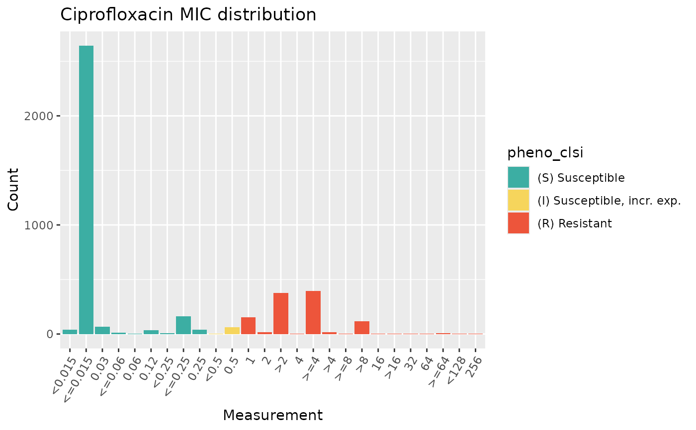
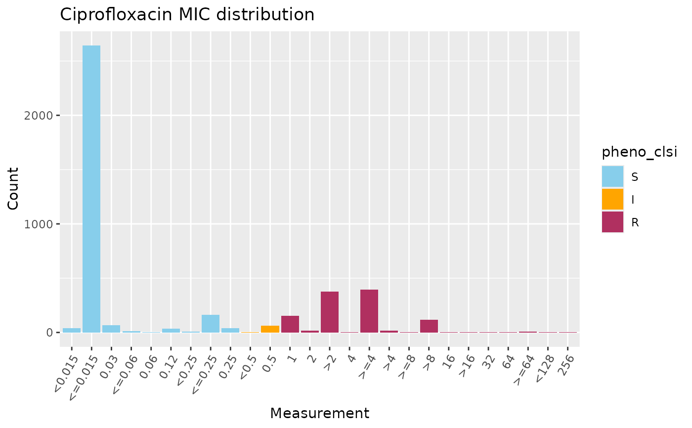
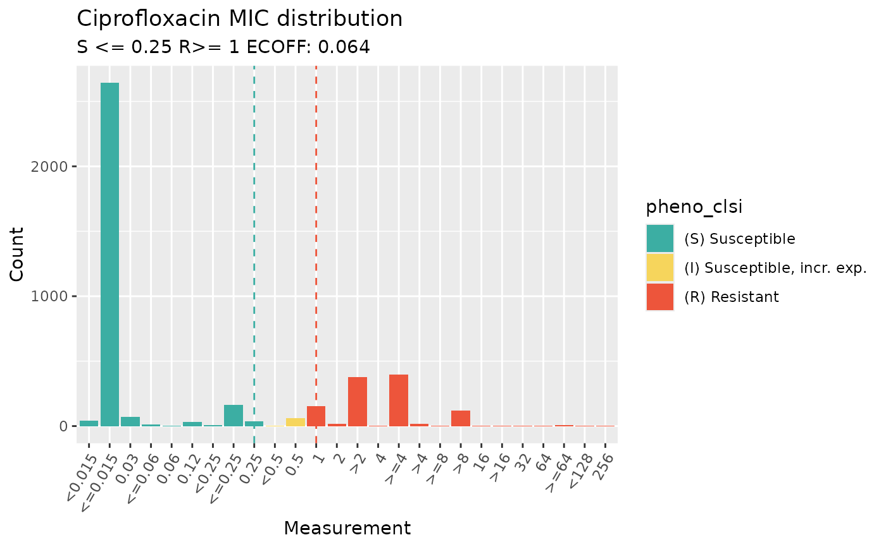
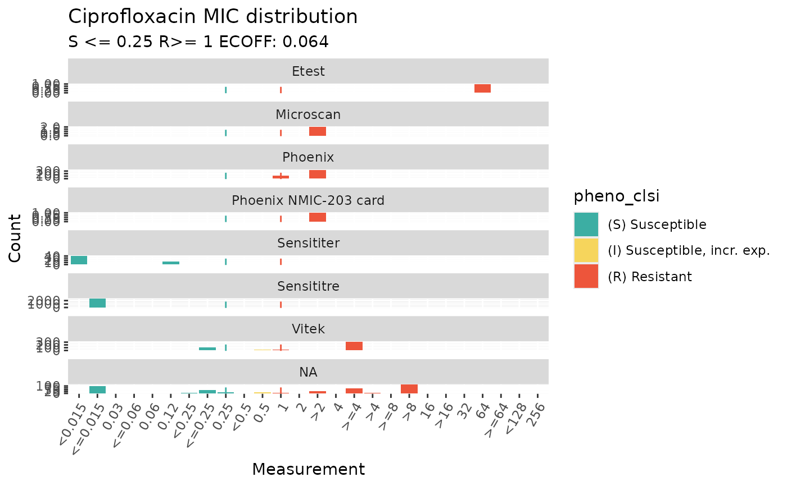

Generate a Stacked Bar Plot of Assay Values Colored by a Variable
Source:R/assay_distribution.R
assay_by_var.RdThis function creates a stacked bar plot using ggplot2, where the x-axis represents MIC (Minimum Inhibitory Concentration) or disk values, the y-axis indicates their frequency, and the bars are colored by a variable (by default, colours indicate whether the assay value is expressed as a range or not). Plots can optionally be faceted on an additional categorical variable. If breakpoints are provided, or species and drug are provided so we can extract EUCAST breakpoints, vertical lines indicating the S/R breakpoints and ECOFF will be added to the plot.
Usage
assay_by_var(
pheno_table,
antibiotic = NULL,
measure = "mic",
colour_by = NULL,
bar_cols = NULL,
facet_var = NULL,
bp_site = NULL,
bp_S = NULL,
bp_R = NULL,
bp_ecoff = NULL,
species = NULL,
guideline = "EUCAST 2025",
bp_cols = c(S = "#3CAEA3", R = "#ED553B", E = "grey"),
x_axis_label = "Measurement",
y_axis_label = "Count",
colour_legend_label = NULL,
plot_title = NULL
)Arguments
- pheno_table
Phenotype table in standard format as per import_ast().
- antibiotic
(optional) Name of an antibiotic to filter the 'drug_agent' column, and to retrieve breakpoints for.
- measure
Name of the column with assay measurements to plot (default "mic").
- colour_by
(optional) Field name containing a variable to colour bars by (default NULL, which will colour each bar to indicate whether the value is expressed as a range or not).
- bar_cols
(optional) Manual colour scale to use for bar plot. If NULL,
colour_byvariable is of class 'sir', bars will by default be coloured using standard SIR colours.- facet_var
(optional) Column name containing a variable to facet on (default NULL).
- bp_site
(optional) Breakpoint site to retrieve (only relevant if also supplying
speciesandantibioticto retrieve breakpoints, and not supplying breakpoints viabp_S,bp_R,ecoff).- bp_S
(optional) S breakpoint to plot.
- bp_R
(optional) R breakpoint to plot.
- bp_ecoff
(optional) ECOFF breakpoint to plot.
- species
(optional) Name of species, so we can retrieve breakpoints to print at the top of the plot to help interpret it.
- guideline
(optional) Guideline to use when looking up breakpoints (default 'EUCAST 2025').
- bp_cols
(optional) Manual colour scale for breakpoint lines.
- x_axis_label
(optional) String to label the x-axis (default "Measurement").
- y_axis_label
(optional) String to label the y-axis (default "Count").
- colour_legend_label
(optional) String to label the barplot fill colour legend (default NULL, which results in plotting the variable name specified via the 'colour_by' parameter).
- plot_title
(optional) String to title the plot (default indicates whether MIC or disk distribution is plotted, prefixed with the antibiotic name if provided, e.g. 'Ciprofloxacin MIC distribution')
Examples
# plot MIC distribution, highlighting values expressed as ranges
assay_by_var(
pheno_table = ecoli_ast, antibiotic = "Ciprofloxacin",
measure = "mic"
)

# colour by SIR interpretation recorded in column 'pheno_clsi'
assay_by_var(
pheno_table = ecoli_ast, antibiotic = "Ciprofloxacin",
measure = "mic", colour_by = "pheno_clsi"
)

# manually specify colours for the barplot
assay_by_var(
pheno_table = ecoli_ast, antibiotic = "Ciprofloxacin",
measure = "mic", colour_by = "pheno_clsi",
bar_cols = c(S = "skyblue", I = "orange", R = "maroon")
)

# look up ECOFF and CLSI breakpoints and annotate these on the plot
assay_by_var(
pheno_table = ecoli_ast, antibiotic = "Ciprofloxacin",
measure = "mic", colour_by = "pheno_clsi",
species = "E. coli", guideline = "CLSI 2025"
)
#> MIC breakpoints determined using AMR package: S <= 0.25 and R > 1

# facet by method
assay_by_var(
pheno_table = ecoli_ast, antibiotic = "Ciprofloxacin",
measure = "mic", colour_by = "pheno_clsi",
species = "E. coli", guideline = "CLSI 2025",
facet_var = "method"
)
#> MIC breakpoints determined using AMR package: S <= 0.25 and R > 1
